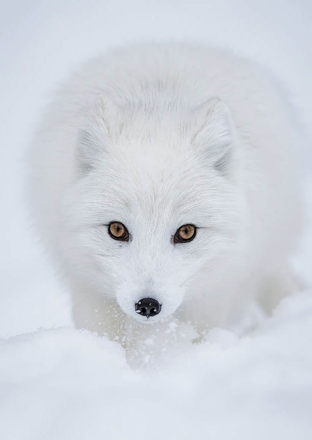

Lis polarny
gatunek drapieżnego ssaka z rodziny psowatych, występujący na obszarach na północ od północnego kręgu polarnego.
Lisy te można spotkać zarówno nad morzem, w dolinach, jak i wysoko na grzbietach górskich. Są to zwierzęta terytorialne. Najczęściej występuje w ubarwieniu letnim brązowo-szarym, a zimą śnieżnobiałym lub stalowoniebieskim, choć spotyka się też lisy czarne przez cały rok.